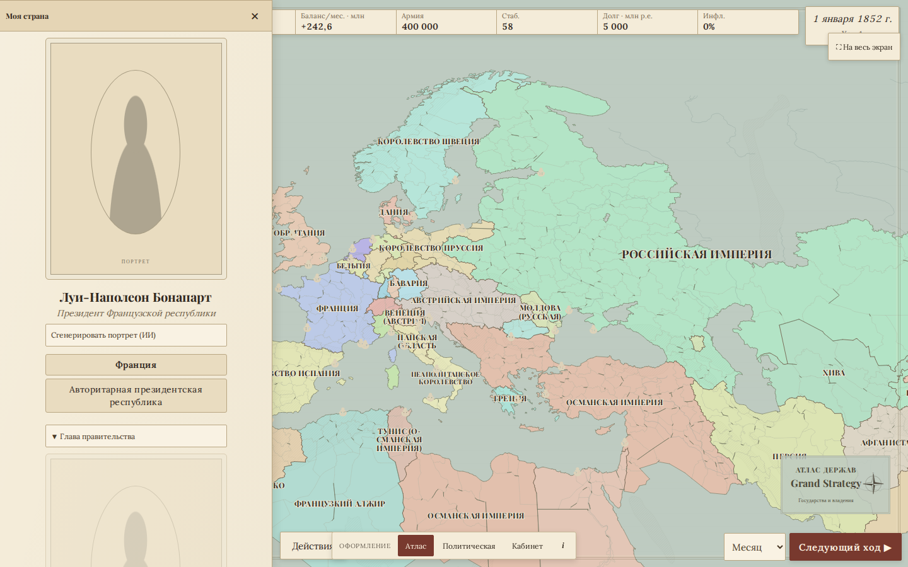
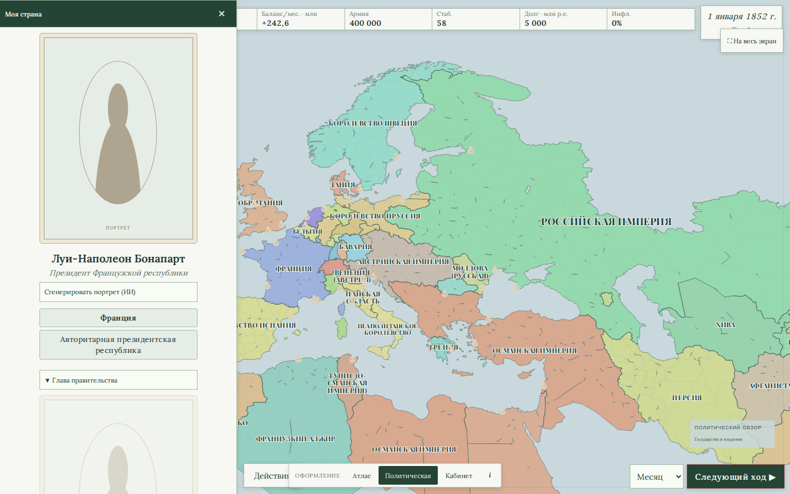
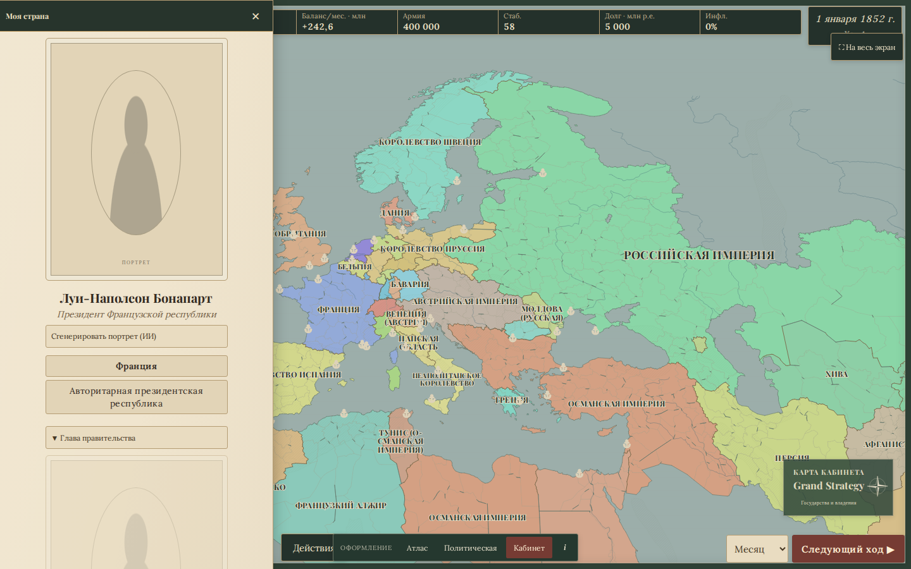
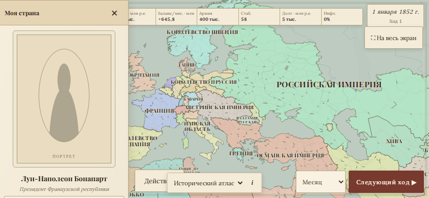
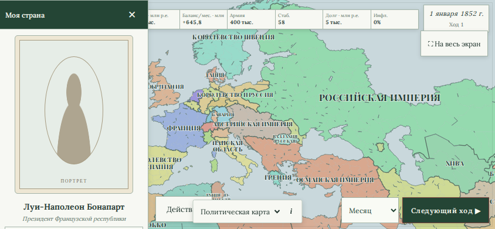
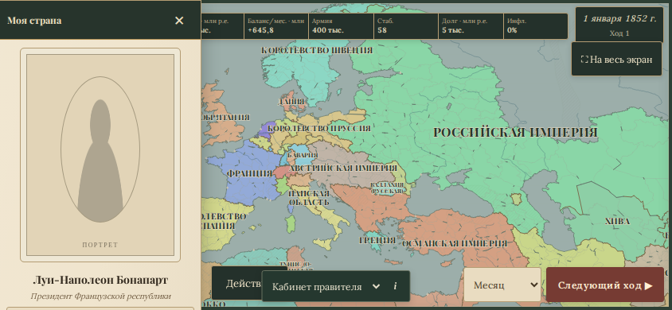
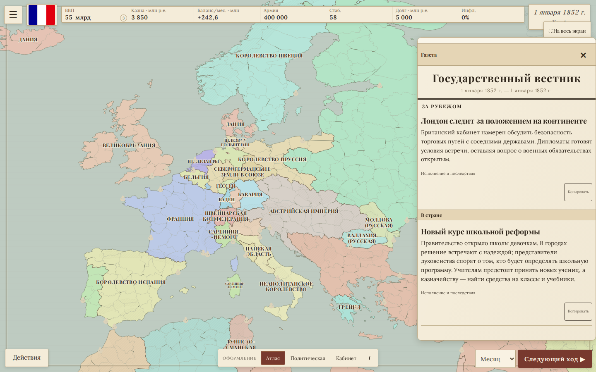
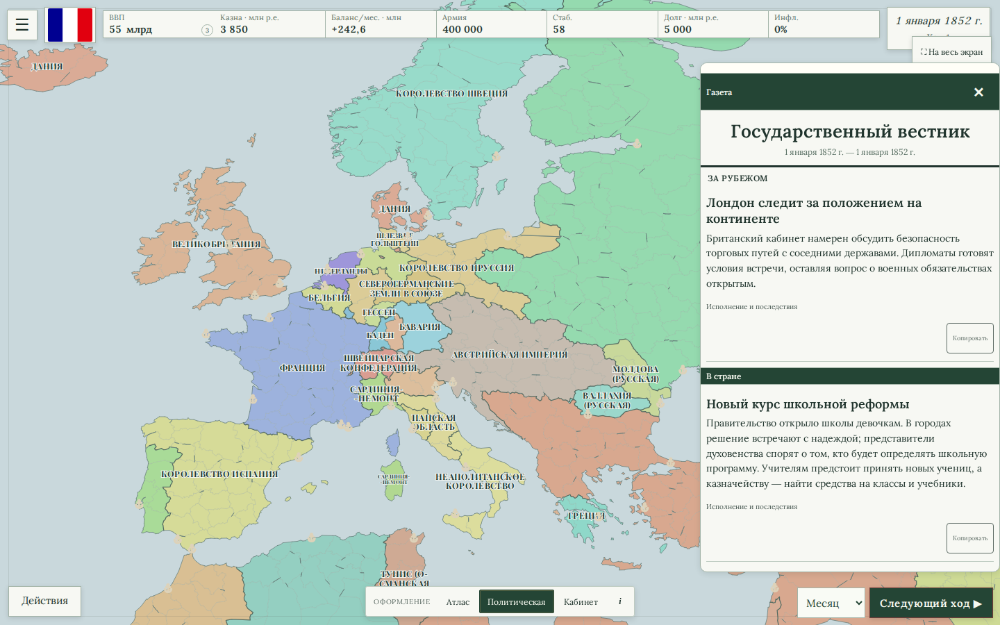
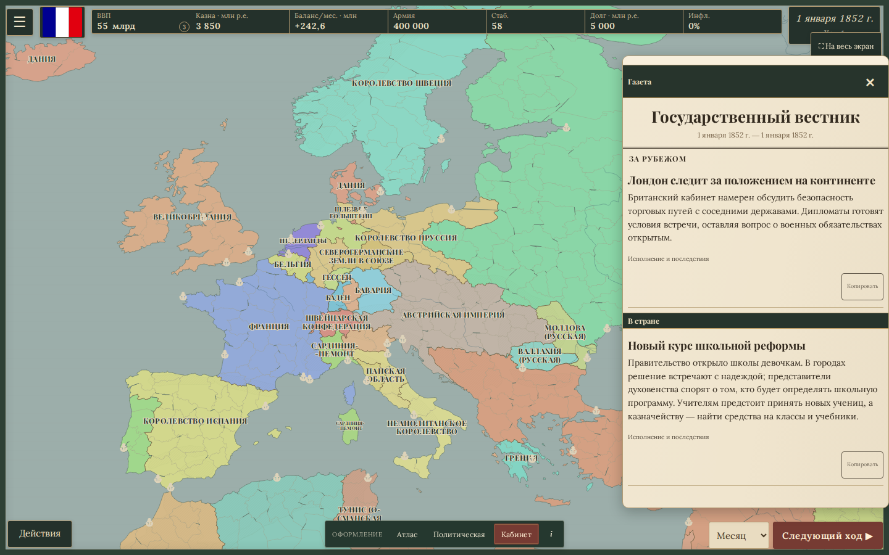

Исторический атлас
Светлая бумага, чернильные названия, тонкие берега и штриховка горных областей. Как карта, которую развернули рядом с газетой.
Открыть атласОдна партия, одна карта, три разных настроения. Открой вариант и переключай оформление в нижней части экрана — страна, дата и масштаб сохраняются.

Светлая бумага, чернильные названия, тонкие берега и штриховка горных областей. Как карта, которую развернули рядом с газетой.
Открыть атлас
Чёткие территории, строгие кнопки, минимум декоративных деталей. Для тех, кто хочет спокойно читать обстановку и принимать решения.
Открыть карту
Тёмные чернила и зелёное сукно, светлые бумаги, сдержанные рамки. Более камерное ощущение власти и дипломатической переписки.
Открыть кабинет


Один демонстрационный текст во всех трёх стилях.



Штриховка показывает реальные крупные горные области, линии — крупные реки. Это атласное обозначение местности. Государственные территории остаются территориями выбранного сценария.
Ориентиры: атлас Левассёра, 1852; карта Европы Барби дю Бокажа, 1852; кабинет Фридриха Вильгельма IV, 1846; Suzerain — пример политического интерфейса.
Физическая география: Natural Earth, public domain. Исторические изображения служили ориентирами; изображения других игр не использовались как игровые материалы.